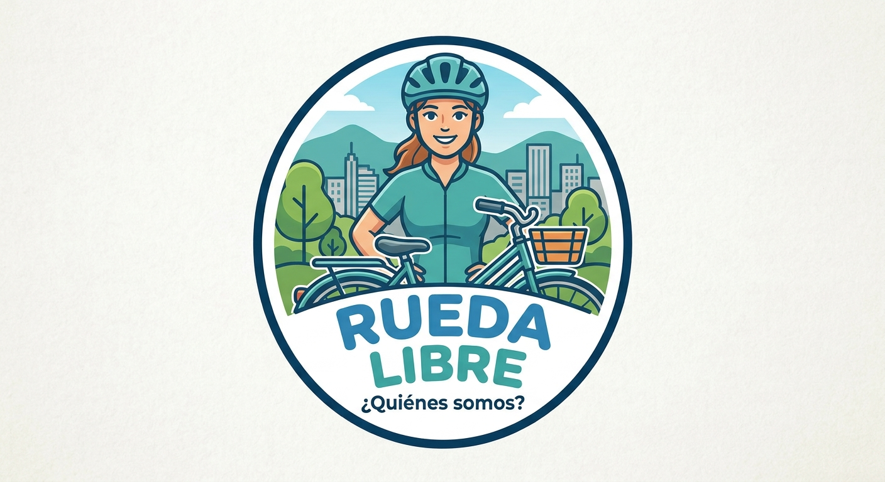
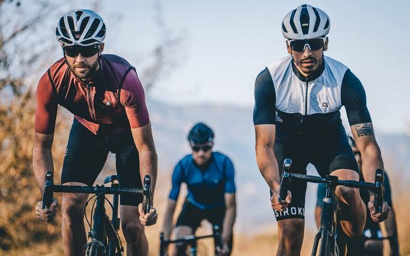
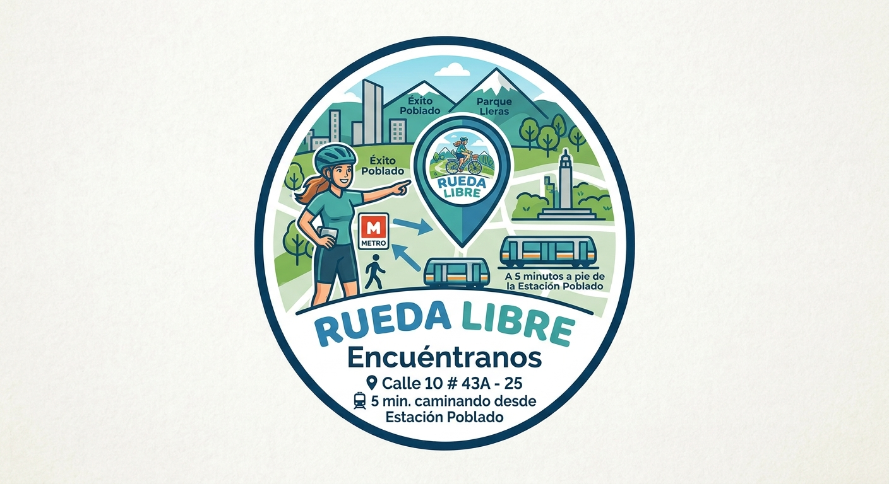

Tours Guiados y planes por la Ciudad
Descubre la historia de Medellín con un guía experto. El recorrido incluye hidratación y asistencia técnica.
¿Quieres asegurar tu rodada? ¡Reservar ahora!

Bienvenido a Rueda Libre Aquí podras explorar Medellín sobre dos ruedas. Alquila tu bicicleta o únete a nuestros tours guiados para vivir la ciudad de una forma única. ¡Tu ruta empieza aquí

En Rueda Libre creemos que la mejor manera de descubrir Medellín es sobre dos ruedas. Somos una iniciativa que busca conectar a las personas con la ciudad a través de experiencias en bicicleta, combinando aventura, diversión y turismo.
Nuestro objetivo es ofrecer una forma diferente de explorar Medellín, recorriendo sus calles, descubriendo sus lugares más emblemáticos y disfrutando de sus paisajes mientras promovemos una movilidad más sostenible y saludable. Encuéntranos. ¡Tu ruta empieza aquí!

Descubre la historia de Medellín con un guía experto. El recorrido incluye hidratación y asistencia técnica.
¿Quieres asegurar tu rodada? ¡Reservar ahora!
Beneficios de usar bicicleta

Estamos en el corazón de Medellín. Ver ubicación en Google Maps.
Dirección: Calle 10 # 43A - 25, El Poblado, Medellín. Nos encontramos a 5 minutos de la estacion Poblado del Metro